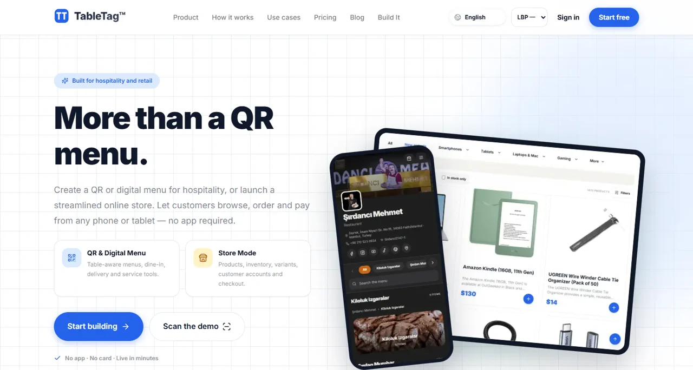

TableTag
QR menus and online stores
Businesses can publish a multilingual QR menu with table-specific codes, dine-in ordering and delivery. Store Mode adds product variants, inventory, checkout, order management and customer accounts.
Visit TableTag